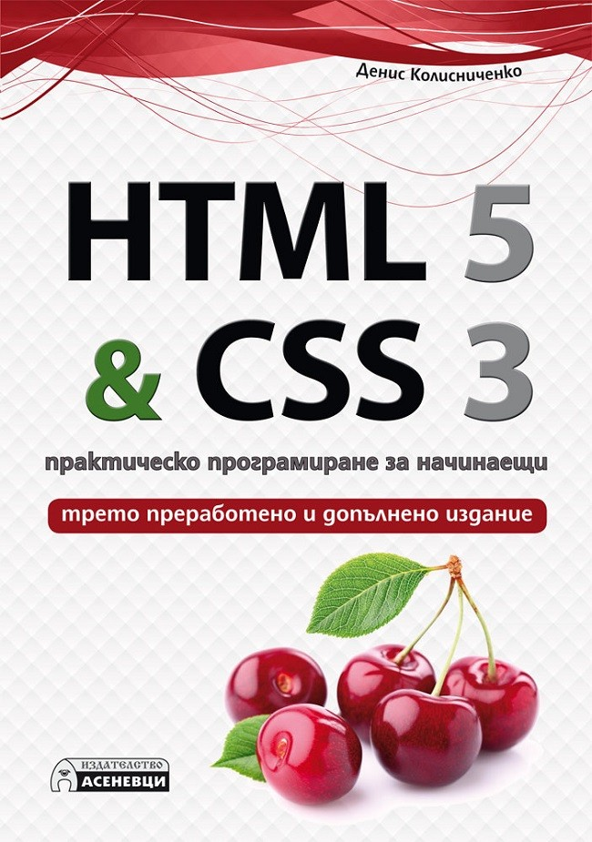

Section 1: HTML 5
Section 2: CSS 3

- HTML 5
- Основи на HTML
- Структуриране на текст
- Оформяне на текст
- Вмъкване на мултимедия в HTML страниците
- Връзки
- Създаване на таблици. Табличен дизайн.
- Форми за въвеждане на данни. Методи GET и POST
- CSS 3
- Въведение в CSS
- Параметри на шрифта и фона
- Параметри на абзаците
- Контейнери
- Отстъпи и рамки
- Параметри на таблиците
- Комбинатори, селектори и псевдокласове
- CSS разширения и как са повлияли на CSS стандарта
- Десет полезни примера
- Ефектни бутони с CSS
- Стил на кода
- ПРИЛОЖЕНИЯ
- Приложение 1: Стандартни цветове
- Приложение 2: MIME типове
- Приложение 3: Езикови кодове
- Заключение